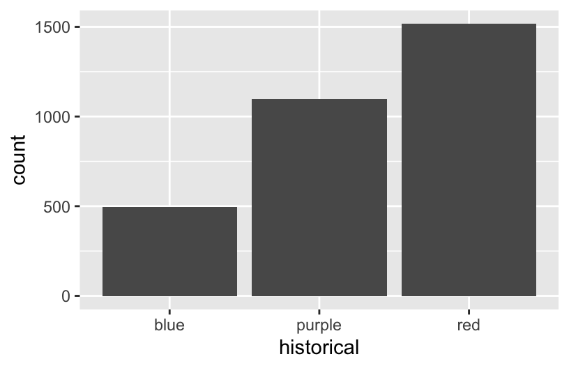

# Import data
survey <- read.csv("https://ajohns24.github.io/data/112/about_us_2024.csv")
# How many students have now filled out the survey?
nrow(survey)[1] 28Let’s review some univariate concepts and code using our class survey data. If the answers aren’t at the top of your mind, don’t fret! We’ve barely started speaking this new language, and learned a ton of vocab last week, so you naturally won’t remember it all.
# Import data
survey <- read.csv("https://ajohns24.github.io/data/112/about_us_2024.csv")
# How many students have now filled out the survey?
nrow(survey)[1] 28Students were asked, in that moment, where they’d most like to spend time outside. How did they answer? Was there a lot of agreement or a lot of variability in answers? Build and interpret a plot that helps address these questions while reviewing:
Students were asked about their ideal outdoor temperature, in degrees Celsius. How did they answer? What was the typical response? What was the range in responses? Were there any outliers? Build and interpret 2 plots that help address these questions.
Bar charts & histograms can appear pretty similar, but they do different things.
Thus far, we’ve been studying one variable at a time, using univariate plots. But once we get a sense of how individual variables behave on their own, our questions often turn to relationships among variables. For example, in our hikes data:
time does it take to complete a hike? ——> How is time related to a hike’s elevation? What about its length?rating vary from hike to hike? ——-> How is difficulty rating related to a hike’s ascent?Exploring univariate patterns often sparks follow-up questions about relationships between 2+ variables. Often, but not always, variables take on specific roles:
time to complete a hike)elevation or length)Visualizations can help explore:
For each pair of variables below, sketch on paper a visualization of their relationship. Focus on general viz process, don’t worry about the exact details. The data here are totally made up.
temp_3pm temp_9am
1 24 14
2 26 18
3 20 15
4 15 13
5 15 11
6 15 11weather <- data.frame(temp_3pm = c(24, 26, 20, 15, 15, 0, 40, 60, 57, 44, 51, 75),
location = rep(c("A", "B"), each = 6))
weather temp_3pm location
1 24 A
2 26 A
3 20 A
4 15 A
5 15 A
6 0 A
7 40 B
8 60 B
9 57 B
10 44 B
11 51 B
12 75 BThink: How might we modify the below density plot of temp_3pm to distinguish between locations?
rain_today (the response) and location (the predictor)weather <- data.frame(rain_today = c("no", "no", "no", "no", "yes", "no", "yes", "no", "yes", "yes", "no", "yes"),
location = c(rep("A", 7), rep("B", 5)))
weather rain_today location
1 no A
2 no A
3 no A
4 no A
5 yes A
6 no A
7 yes A
8 no B
9 yes B
10 yes B
11 no B
12 yes BThink: How might we modify the below bar plot of location to distinguish between days on which it did or didn’t rain?
As with univariate plots, an appropriate visualization for the relationship between 2 variables depends upon whether the variables are quantitative or categorical. In general:
Github user Tony McGovern has compiled and made available 2020/2016/2012 presidential election results for most of 3000+ U.S. counties, except Alaska. (Image: Wikimedia Commons)

A wrangled version of this data, is imported below, after being combined with:
df_county_demographics data set from the choroplethr R package# Load data
elections <- read.csv("https://mac-stat.github.io/data/election_2020_county.csv")
# Check it out
head(elections) state_name state_abbr historical county_name county_fips total_votes_20
1 Alabama AL red Autauga County 1001 27770
2 Alabama AL red Baldwin County 1003 109679
3 Alabama AL red Barbour County 1005 10518
4 Alabama AL red Bibb County 1007 9595
5 Alabama AL red Blount County 1009 27588
6 Alabama AL red Bullock County 1011 4613
repub_pct_20 dem_pct_20 winner_20 total_votes_16 repub_pct_16 dem_pct_16
1 71.44 27.02 repub 24661 73.44 23.96
2 76.17 22.41 repub 94090 77.35 19.57
3 53.45 45.79 repub 10390 52.27 46.66
4 78.43 20.70 repub 8748 76.97 21.42
5 89.57 9.57 repub 25384 89.85 8.47
6 24.84 74.70 dem 4701 24.23 75.09
winner_16 total_votes_12 repub_pct_12 dem_pct_12 winner_12 total_population
1 repub 23909 72.63 26.58 repub 54907
2 repub 84988 77.39 21.57 repub 187114
3 repub 11459 48.34 51.25 dem 27321
4 repub 8391 73.07 26.22 repub 22754
5 repub 23980 86.49 12.35 repub 57623
6 dem 5318 23.51 76.31 dem 10746
percent_white percent_black percent_asian percent_hispanic per_capita_income
1 76 18 1 2 24571
2 83 9 1 4 26766
3 46 46 0 5 16829
4 75 22 0 2 17427
5 88 1 0 8 20730
6 22 71 0 6 18628
median_rent median_age
1 668 37.5
2 693 41.5
3 382 38.3
4 351 39.4
5 403 39.6
6 276 39.6We’ll use this data to explore voting outcomes within the U.S.’s 2-party system. Here’s a list of candidates by year:
| year | Republican candidate | Democratic candidate |
|---|---|---|
| 2020 | Donald Trump | Joe Biden |
| 2016 | Donald Trump | Hillary Clinton |
| 2012 | Mitt Romney | Barack Obama |
How many, or roughly what percent, of the 3000+ counties did the Republican candidate win in 2020?
winner variable.The repub_pct_20 variable provides more detail about the Republican support in each county. Construct a plot of repub_pct_20.
Notice that the distribution of Republican support from county to county is slightly left skewed or negatively skewed.
What follow-up questions do you have?
Don’t spend more than 3 minutes on this!
Below is a scatterplot of the Republican support in 2020 vs 2016. Notice that:
repub_pct_20 might be predicted by repub_pct_16, not vice versaTry to replicate this using ggplot(). THINK:
geom_???) might add these dots / points for each county? We haven’t learned this yet, just take some guesses.
Run each chunk below to build up a a scatterplot of repub_pct_20 vs repub_pct_16 with different glyphs representing each county. Address or think about any prompts in the comments (#).
Summarize the relationship between the Republican support in 2020 and 2016. Be sure to comment on:
The trend of the relationship between repub_pct_20 and repub_pct_16 is clearly positive and (mostly) linear. We can highlight this trend by adding a model “smooth” to the plot:
Construct a new plot that contains the model smooth but does not include the individual point glyphs.
By default, geom_smooth() adds a smooth, localized model line. To examine the “best” linear model, we can specify method = "lm". It’s pretty similar in this example!
To examine how the 2020 results are related to some county demographics, construct scatterplots of repub_pct_20 vs median_rent, and repub_pct_20 vs median_age. Summarize the relationship between these two variables and comment on which is the better predictor of repub_pct_20, median_rent or median_age.
Next, let’s explore the relationship between a county’s 2020 Republican support repub_pct_20 and the historical political trends in its state. In this case repub_pct_20 is quantitative, but historical is categorical. Explain why a scatterplot might not be an effective visualization for exploring this relationship. (What questions does / doesn’t it help answer?)
Though the above scatterplot did group the counties by historical category, it’s nearly impossible to pick out meaningful patterns in 2020 Republican support in each category. Let’s try adding 2 different geom layers to the frame:
Box plots are constructed from five numbers - the minimum, 25th percentile, median, 75th percentile, and maximum value of a quantitative variable:

REFLECT:
Summarize what you’ve learned about the 2020 Republican county-level support within and between red/purple/blue states.
Don’t spend more than 3 minutes on this!
We can also visualize the relationship between repub_pct_20 and historical using our familiar density plots. In the plot below, notice that we simply created a separate density plot for each historical category. (The plot itself is “bad” but we’ll fix it below.) Try to adjust the code chunk below, which starts with a density plot of repub_pct_20 alone, to re-create this image.

Work through the chunks below and address the comments therein.
We’ve now learned 3 (of many) ways to visualize the relationship between a quantitative and categorical variable: side-by-side violins, boxplots, and density plots.
Finally, let’s simply explore who won each county in 2020 (winner_20) and how this breaks down by historical voting trends in the state. That is, let’s explore the relationship between 2 categorical variables! Following the same themes as above, we can utilize grouping features such as fill/color or facets to distinguish between different categories of winner_20 and historical.
Spend at most 5 minutes on the following intuition check. Adjust the code below to recreate the following two plots.


Construct the following 4 bar plot visualizations.
Name one pro and one con of using the “proportional bar plot” instead of one of the other three options.
What’s your favorite bar plot from part and why?
Decide what’s best for you:
Import some daily weather data from a few locations in Australia:
Construct plots that address the research questions in each chunk. You might make multiple plots–there are many ways to do things!. However, don’t just throw spaghetti at the wall.
Reflect before doing anything. What types of variables are these? How might you plot just 1 of the variables, and then tweak the plot to incorporate the other?


.png){kind=link}